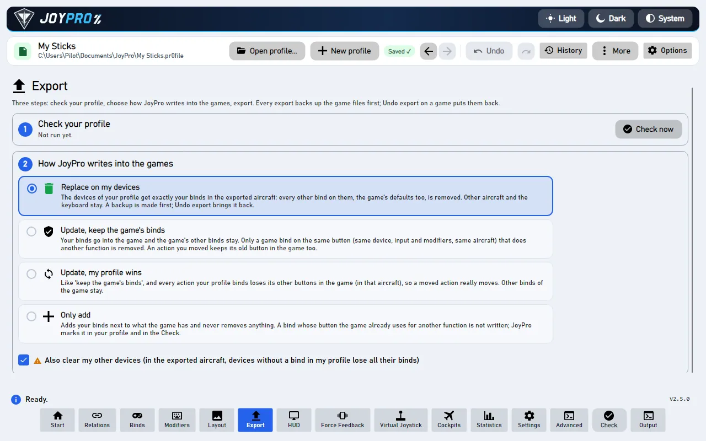
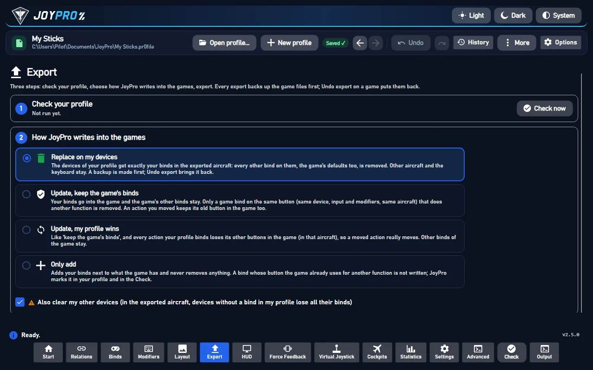

Export is the step that makes your sticks work in the game. JoyPro writes your relations and binds into the control settings files of each game, the same files the game's own Controls menu saves. Nothing runs in the background while you fly: once exported, the game reads its own files as always.
Coming later: one YouTube video per topic, recorded with the English interface, with subtitles in every language JoyPro speaks.
flowchart LR
P["Your profile<br/>(relations + binds)"] --> C{"1 Check"}
C -->|problems fixed| M["2 Choose how:<br/>Replace / Update / Only add"]
M --> G["3 Tick games,<br/>Export ticked games"]
G --> B[("Backup of the<br/>game files")]
B --> W["Game files written"]
W --> R["Watcher record<br/>(no question later)"]
W --> U["Undo last export<br/>(per game)"]
#Export in three steps
Open Export in the bar at the bottom. The page is three numbered cards from top to bottom:




- Check your profile. Press Check now. JoyPro looks for things that would go wrong in the game, for example one button that does two things in the same aircraft. Fix what it finds (one click per problem) or leave it; the check never blocks the export. See the Check.
- How JoyPro writes into the games. Pick one of four choices. If you are not sure, keep the first one: Replace on my devices with Also clear my other devices ticked. Your sticks then do exactly what your profile says, and nothing else.
- Export to games. Every game your profile has binds for gets a tile with its picture. Tick the games and press Export ticked games, or press Export now on one tile.
Close the game first. Games write their control files when they quit, so JoyPro refuses to export into a game that is running and tells you so.
#Which choice is right for me?
| Choice | Pick it when | What happens to the game's own binds |
|---|---|---|
| Replace on my devices | JoyPro is the place where you set up your sticks | On the devices in your profile, only your binds stay (for the aircraft you export). |
| Update, keep the game's binds | You also bind things inside the game and want to keep them | Your binds go in; a game bind is removed only where it sits on a button you use for something else. |
| Update, my profile wins | Like the one above, but you moved actions to other buttons in JoyPro | As above, and every action you bind loses its other buttons in the game, so a move really moves. |
| Only add | You are trying JoyPro for the first time | Nothing is removed. If the game already uses a button for something else, your bind is left out and the Check tells you. |
Also clear my other devices (a tick under the choices): connected devices that have no binds in your profile lose their binds in the exported aircraft. Leave it ticked if you want a clean start, untick it if you use a second device only inside the game.
#Safe by design
- Before JoyPro changes a game file it copies it into a backup. Each tile has Undo last export: it puts the files back exactly as they were, byte for byte.
- The first export into a game that already has its own binds asks once: "Import first?". Choose Import first if you want to keep what you made in the game, Export anyway to replace it.
- Devices that are not plugged in keep their binds. Your mouse and gamepad binds are never touched.
#What you notice in the game
Start the game and open its controls menu: your binds are there, in each device's column, under the names the game uses. In DCS they show per aircraft; in Star Citizen per ship action; in IL-2 in Key mapping. The section In the game below lists every kind of game.
#The modes in detail
"Same input" means the same device, the same button or axis and the same modifiers, in the same aircraft (or ship, vehicle) when the game keeps binds per aircraft. Every mode works only in the aircraft of the export.
Only add (add) |
Update, keep (merge) |
Update, profile wins (merge-overwrite) |
Replace (clean) |
|
|---|---|---|---|---|
| Your binds | written where the input is free | written | written | written |
| A game bind on an input you use for another action | kept; your bind is not written and marked | removed | removed | removed |
| A game bind of the same action on another input (after a Move) | kept | kept (the action is on both inputs) | removed | removed on the written devices |
| Other game binds on your devices | kept | kept | kept | removed |
| Game defaults on your devices | kept | kept | kept unless they hold one of your actions | removed |
| Connected devices without binds in the profile | kept | kept | your actions removed from them | kept, unless Also clear my other devices |
| Devices that are not connected, mouse, gamepad | never touched | never touched | never touched | never touched |
| Keyboard | only with the keyboard option | only with the keyboard option | only with the keyboard option | only with the keyboard option |
| Aircraft not in the export | never touched | never touched | never touched | never touched (DCS: unless "clean all aircraft") |
Also clear my other devices (--nuke-untouched-devices true) is not used with Only add. With the other modes it
empties the connected devices the profile does not use, in the exported aircraft (DCS: their DCS defaults too). The
devices the import ignores and the vJoy device JoyPro tunnels into are never cleared.
Since 2.5.0 the GUI's default is Replace on my devices + Also clear my other devices (as in JoyPro 1). A mode
you picked yourself is remembered (export-settings.json, ModeChosenByUser). The engine's default when a command
line leaves out --mode is merge-overwrite.
flowchart TD
A["A profile bind for action X<br/>on input I"] --> B{"Does the game use I<br/>for another action?"}
B -->|no| W["Write X on I"]
B -->|yes| M{"Mode"}
M -->|Only add| S["Not written:<br/>mark 'Not written to the game'"]
M -->|Update / Replace| R["Remove the game's bind on I,<br/>write X on I"]
W --> O{"Mode is 'profile wins'<br/>or Replace?"}
R --> O
O -->|yes| X["X loses its other inputs<br/>in that aircraft"]
O -->|no| K["X keeps its other inputs"]
#Options per game
Under Options and paths (for experts):
- DCS: the Aircraft... list on the DCS tile (only ticked aircraft are written); keep keyboard defaults
(
--keep-keyboard-defaults, on); my devices lose the DCS default binds in every other aircraft too (--clean-all-aircraft, off). - Star Citizen: keep keyboard defaults, prefer the local order (
--prefer-local-order). - The other games: a Dry run box (
--dry-run) that shows what would change without writing. - Paths: a different Saved Games or config folder per game; Own paths and ignored devices for this profile gives the open profile its own instead of the PC's.
#Marks: "Not written to the game"
Only add (and any mode where a game has no free place for another input, for example Elite Dangerous with two inputs
per action) leaves some binds out. The profile remembers each one with the game's action that holds the input and the
date; the Check shows a card per mark with Export with 'Update' to replace it, Move to another button and
Keep as is. Each export replaces the marks of its game and aircraft, so a mark disappears when a later export
writes the bind. Engine: engine export-marks list, engine export-marks dismiss.
#Remembered settings
The mode, the nuke tick, the per-game options and the paths are kept in export-settings.json in JoyPro's settings
folder; the games and DCS aircraft you ticked yourself are kept per profile. Clean and nuke ask before every export
(Settings > Confirmations can switch the question off).
#After the export
- Undo last export on the tile restores the newest backup of that game (
engine backups restorelatest --game <id>). The full list is under Game config backups at the bottom of the Export page. - The export records the game's files for the game watcher: JoyPro's own export never asks "take the changes?" later; a change you make in the game afterwards does (the watcher).
- JoyPro keeps its own data next to the game file (DCS
.jp, IL-2jp.actions,.joypro-meta.json), so a later import brings back relation names, groups, modifiers and curves (re-import).
#In the game
What the player sees after an export depends on the kind of game. Every game below follows the same rules: JoyPro writes only the actions of its command list, refuses to write while the game runs, backs the files up first and never guesses a device or an action it cannot match (it skips it with a warning).
JoyPro takes over the devices it writes. With Replace every other bind of those devices disappears in the exported aircraft, with Also clear the other connected devices are emptied too (DCS: their DCS defaults as well).
- DCS World: per aircraft and device a
Saved Games\DCS\Config\Input\<aircraft>\joystick\<device>.diff.lua, a.jpbeside it and the aircraft'smodifiers.lua. In Options > Controls, pick the aircraft: your binds are in the device's column, removed defaults show as empty cells, your modifiers are in the modifier list. The file holds only the differences from DCS's defaults, as DCS itself writes them. Only the ticked aircraft change. - IL-2 Great Battles:
data\input\global.actions(new lines at the end, the order kept) and the axis responses; Settings > Key mapping shows them. Mouse lines and unknown lines stay. - IL-2 Korea:
data\input\general.actions(the key mapping profile "General"). - Falcon BMS: the launcher's
User\Config\Setup.v100.* {GUID}.xmlper device; the launcher builds the key file and the axis mapping from them at its next Launch, so start BMS through the launcher. - MSFS 2024 / 2020: input profiles the sim reads (2024: JoyPro's preset package
joypro-input-profilesin the Community folder and the Steam profiles); in Controls the device shows JoyPro's preset. - X-Plane 11 / 12: the joystick preferences in
Output\preferences; Settings > Joystick shows the assignments.
JoyPro touches only the flight actions (aircraft, helicopter, spaceship). Your on-foot, vehicle and menu binds stay byte for byte. Clean and nuke release only cataloged flight actions.
- Star Citizen:
LIVE\user\client\0\Profiles\default\actionmaps.xmlwith JoyPro'sactionmaps.jpbeside it. Options > Keybindings shows the ship actions on your joysticks (js1, js2, ...). With clean or nuke the game's own joystick defaults on js1 are switched off when js1 is written or unused. - War Thunder:
Documents\My Games\WarThunder\Saves\<id>\production\machine.blk. Controls show the aircraft binds; tank and ship controls are unchanged. - Arma 3 / Arma 2: the profile's key settings; only aircraft and helicopter actions change.
- Elite Dangerous keeps two inputs per action (Primary and Secondary). A bind with no free place gets a mark "Not written" with "Move to another button" or "Keep as is". On-foot and SRV binds stay.
- X4: the game's input settings; only the cataloged ship actions change.
These games get your sticks through the Virtual Joystick mode: the export writes the binds onto the vJoy device (or the virtual Xbox pad), JoyPro's forwarder feeds it while you play, and HidHide hides the physical devices from that game only. The game sees one device with everything on it.
#How it works inside
sequenceDiagram participant U as You (Export page) participant VM as GUI view model participant E as engine.exe participant F as Game files U->>VM: Export ticked games VM->>E: profile game-state --game <id> E-->>VM: Imported / Exported / GameHasBinds VM-->>U: first export? "Import first?" VM-->>U: clean or nuke? "Removes binds" (Settings > Confirmations) VM->>E: <game> export --mode <m> --nuke-untouched-devices <b> ... E->>E: game running? refuse E->>F: backup every file (GameBackups + .jpbak) E->>F: write only cataloged actions E->>E: sync record (fingerprint + baseline), export marks E-->>VM: result (written, skipped, SkippedTakenInputs) VM-->>U: tile "Exported 14:02", Undo last export enabled
- GUI.
ExportSelectedGamesAsync/ExportGameNowAsync(MainWindowViewModel.ExportGames.cs) askAskAboutFirstExportAsync(engine profile game-state) andConfirmRiskyExportAsync, thenExportGameAsyncpicks the exporter of the tile:dcs,il2,starcitizenor a registry game. The command is built from the page's settings, e.g.RunDcsExportAsync:engine dcs export --mode clean --keep-keyboard-defaults true --nuke-untouched-devices true --clean-all-aircraft false --ignore-device <d> --planes F-16C_50|FA-18C_hornet. Every engine call goes through one place,RunEngineAsync, with--profileand--status true(the busy area's progress and Cancel), serialized so two commands never write at once. - Engine.
engine\Program.csroutesdcs/il2/starcitizento their exporters and every other game toGames.GameRegistry(oneGameIntegrationper game). DCS:EngineDcsExport.Modes.cscomputes, per device file, the binds DCS has active (clean profile minusremoved, plusaddedandchanged), decides which shall be active and writes only real differences from the defaults. - Safety.
GameExportSafety.BackupBeforeOverwritecopies each file to<file>.jpbakand into the versioned backup store (%LOCALAPPDATA%\JoyPro2\GameBackups\<date-time>_<game>\withmanifest.json; the newest 30 sets per game are kept). Registry games (Nuclear Option) get a snapshot of the values they may change. A file the export creates is recorded as "did not exist", so a restore removes it again. - Afterwards. The sync record (
<data>\Sync\<game>.json: size, time and SHA-256 per file and a hash of every bind) makes the watcher quiet for JoyPro's own change.ExportSkippedBinds.csfillsSkippedTakenInputs; the export command turns them into the profile's marks. The profile history keeps a checkpoint before every export.
#Every mode on the command line
| GUI choice | Engine options |
|---|---|
| Replace on my devices + Also clear my other devices (default) | --mode clean --nuke-untouched-devices true |
| Replace on my devices | --mode clean --nuke-untouched-devices false |
| Update, my profile wins (+ Also clear) | --mode merge-overwrite --nuke-untouched-devices true|false |
| Update, keep the game's binds (+ Also clear) | --mode merge --nuke-untouched-devices true|false |
| Only add | --mode add (nuke is not used) |
Per game: engine dcs export, engine il2 export, engine starcitizen export, and engine <game> export for every
registry game (for example engine warthunder export, engine msfs2024 export, engine xplane12 export; each takes
--mode, --dry-run, --include-keyboard and --nuke-untouched-devices). Undo: engine backups restore.
Tests: engine\tests\smoke\dcsexportmodes.ps1 (every mode, round trip, undo byte for byte) and
engine\tests\smoke\roundtrip.ps1 (import, clean + nuke, import again leaves the game as it was).
#Related
- The Export page, every control on it
- The Check before an export
- Export reference and Game config backups
- Game support: what JoyPro does for each game